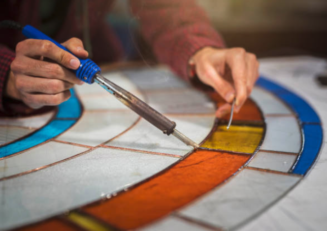

 Stained glass is coloured glass as a material or works created from it. Throughout its thousand-year history, the term has been applied almost exclusively to the windows of churches and other significant religious buildings. Although traditionally made in flat panels and used as windows, the creations of modern stained glass artists also include three-dimensional structures and sculpture. Modern vernacular usage has often extended the term "stained glass" to include domestic lead light and objets d'art created from foil glasswork exemplified in the famous lamps of Louis Comfort Tiffany.
As a material stained glass is glass that has been coloured by adding metallic salts during its manufacture, and usually then further decorating it in various ways. The coloured glass is crafted into stained glass windows in which small pieces of glass are arranged to form patterns or pictures, held together (traditionally) by strips of lead, called cames or calms, and supported by a rigid frame. Painted details and yellow stain are often used to enhance the design. The term stained glass is also applied to windows in enamelled glass in which the colours have been painted onto the glass and then fused to the glass in a kiln; very often this technique is only applied to parts of a window.
Stained glass, as an art and a craft, requires the artistic skill to conceive an appropriate and workable design, and the engineering skills to assemble the piece. A window must fit snugly into the space for which it is made, must resist wind and rain, and also, especially in the larger windows, must support its own weight. Many large windows have withstood the test of time and remained substantially intact since the Late Middle Ages. In Western Europe, together with illuminated manuscripts, they constitute the major form of medieval pictorial art to have survived. In this context, the purpose of a stained glass window is not to allow those within a building to see the world outside or even primarily to admit light but rather to control it. For this reason stained glass windows have been described as "illuminated wall decorations".